Assignment: 4. Racing Vibrabots [GROUP ASSIGNMENT]
By: Daniel Stanchev, Gabriel Deschenes, Marsild Spahiu, Tuomas Nummela
Date: 10/04/2025
1. Pitch #1: Our two tinkering session ideas
In the first pitch presentation for the group project we had to come up with two ideas for a tinkering session. We wanted to create something that had a technical seed that involved electronics but was also extendable with outside materials to allow for true tinkering.
Our first idea was a session in which we give the participants a vibration motor and they use that, combined with household materials to create vibrational art. A major source of inspiration for us was the concept of a Scribblebot that has pencils for legs and vibrates its way around a paper, thus creating art. Below is the mood board for this idea from our pitch presentation, visualizing the opportunities of such tinkering.
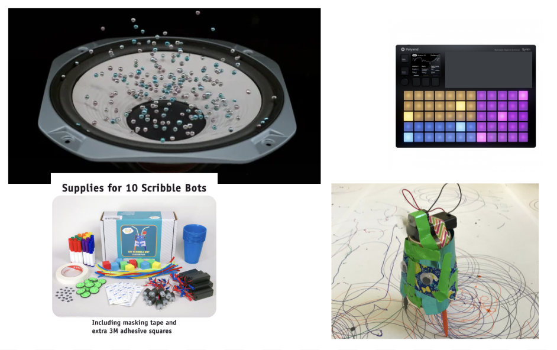The second idea was about expressing emotions and experiences as well as telling stories through both electrically controlled lighting and sounds as well as physical minigures and everyday objects. The goal was to help participants express usually so abstract emotions and experiences in a physical, tinkerable way. Below is the mood board for this from our presentation.
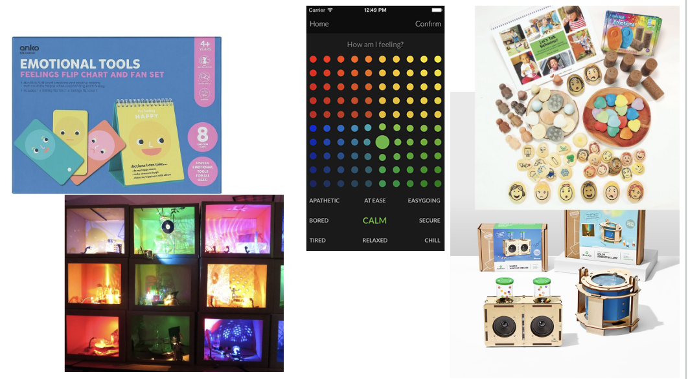During the pitch presentation multiple people (including ourselves) questioned whether the second idea involving expressing emotions was too abstract and not actionable enough. It was easy to see that people might have trouble getting started with the kit unless they have an emotion or a story well-defined in their mind already, which is often not the case. The first idea, on the other hand, was much more concrete and approachable, as well as technically well-defined so we choose to focus on that.
After trying to think deeper into what kind of vibrational art can be created and what would the goal of the tinkering participant be in that scenario, we ultimately felt that just producing art was not actionable and inspiring enough for the session. Since we liked the idea of vibrational movement anyway, we shifted to a much more concrete and measurable tinkering outcome: vibrating robots that attempt to complete a race track as smoothly and quickly as possible.
2. Pitch #2: Vibrating race robots
In the second pitch we had to refine our idea and explain it in a bit more detail. Here's how we started exploring the idea further.
Our selected project idea for a tinkering and scaffolding playground involving vibrating robots was inspired by Hexbugs (Spin Master, 2023). Hexbugs are little vibrating bodies of robots that are targeted as childrens' toys with which they can race and challenge them with obstacle courses. Our idea was to expand the concept of a Hexbug so that the the session attendees would be able to create their own vibrating robots with different materials for legs, weights and motors. Additionally the users would be provided control over the intensity of vibration through a knob that controls the motor power.
The goal of our workshop is to teach and visualize students of physics and robotics how vibration can result in movement and how vibrational movement can be controlled with not only motor placement and intensity but also other materials used. The technical hurdle preventing the students from building these bots all by themselves is the fact that creating controllable sources of vibration takes a lot of effort on its own. To tackle this technical hurdle we provide the user a seed: multiple pre-connected DC motors with offset weights that are controllable with knobs, powered by a battery pack.
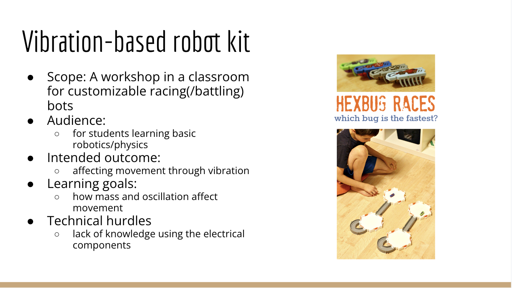The feedback we got at the second pitch session was better. No one was questioning whether our idea was approachable enough or technically feasible. This gave us confidence. However, some questions arose from whether the robot would be extendible enough and what would be the element of surprise during tinkering. Apparently it was not clear that the motors would be controllable, leg materials freely constructable and the race track built by the participants themselves. Due to this misunderstanding we wanted to make sure that in the actual session we would communicate clearly enough that the participant is free to alter any of these things and control the robot motor intensities freely during testing.
3. Resource scavenging and tinkering
After we had a rough idea of what we needed to build to act as the seed, we started scavenging for materials and resources from the Design Lab and our own personal storages. At first we experimented with creating vibration with whatever parts we could find and be able to power. We experimented with fans, big and small as well as servo motors. Ultimately we ended up going with DC motors because of their simplicity and compact size.
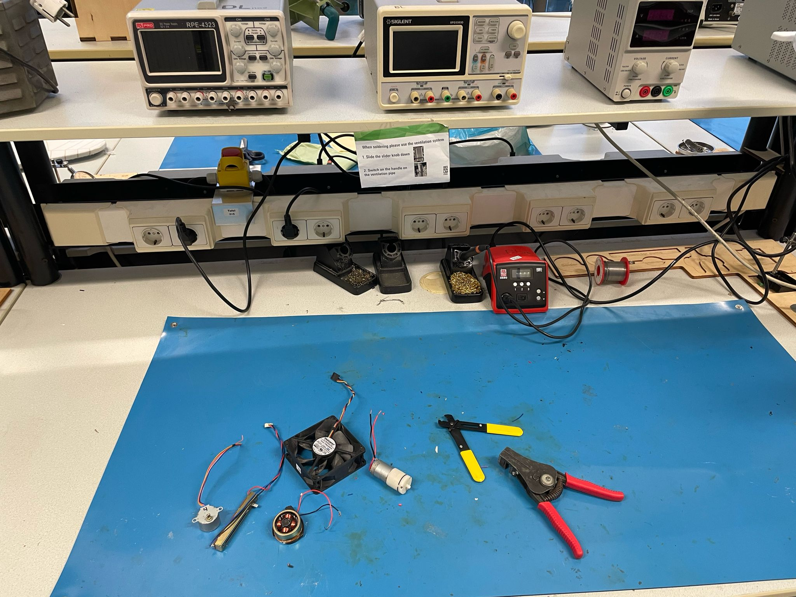Later we also got access to a basic Arduino kit with a DC motor, a battery and a battery connector alongside all other kinds of electrical components which helped a lot.
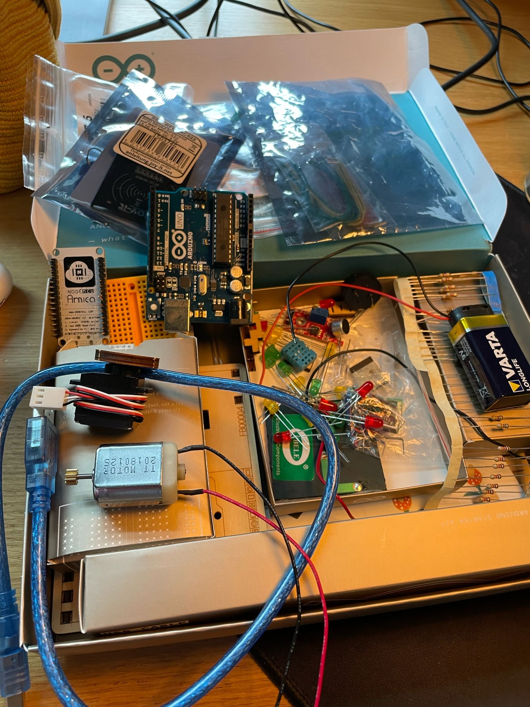At this point in time we also 3D-printed our first iteration of the robot base, i.e. a plate on top of which all electrical and non-electrical components, legs etc. would be placed.
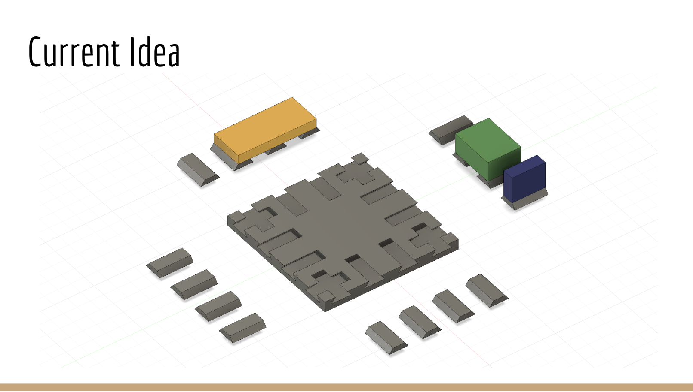 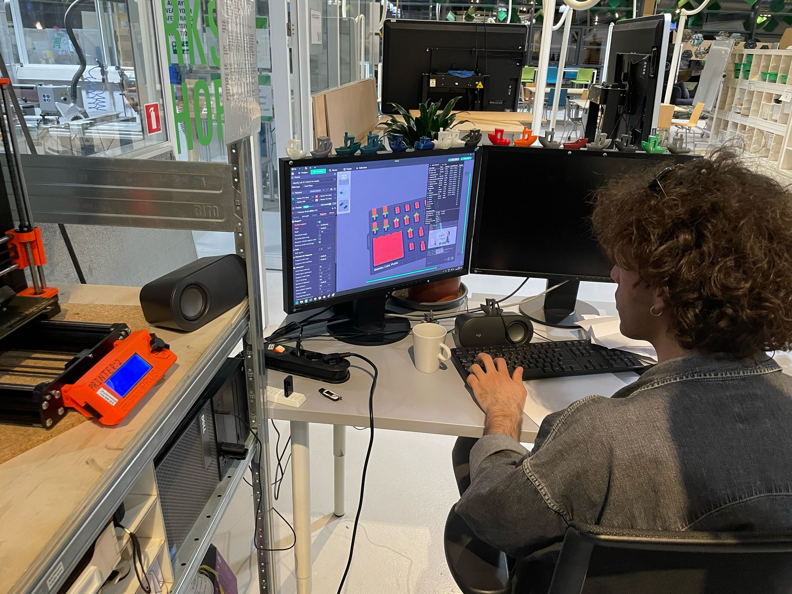4. Iteration #1
After deciding to work with DC motors, we took the below circuit as base (Stuff Builder, 2016) and built it in the electrical workshop. It consisted of a battery, a DC motor and a knob for adjusting the intensity of the DC motor.
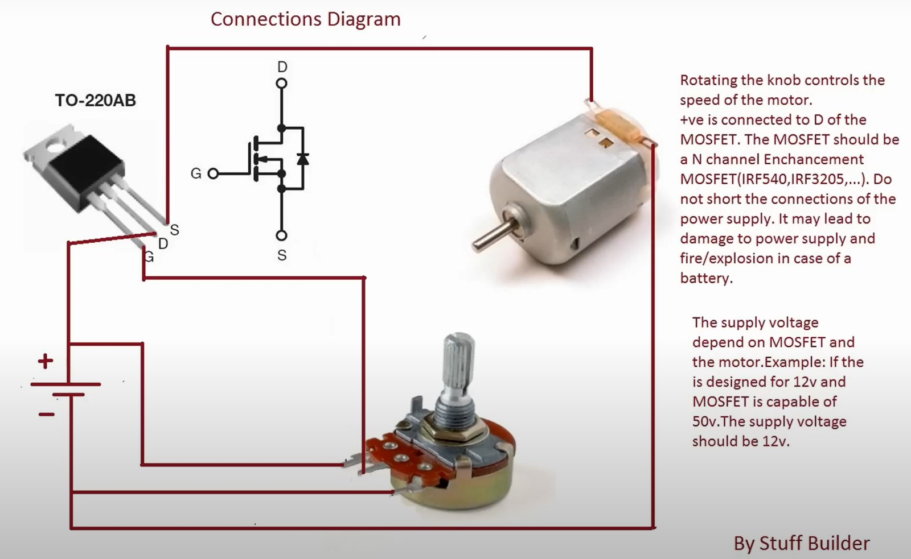After connecting and soldering the circuitry, we built our first iteration by simply attaching the electrical components with rubber bands on top of a plastic plate standing on popsicle sticks. To offset the weight of the DC motor we simply jammed an eraser through the axel of the motor. This worked out surprisingly well and the robot started moving according to the knob controls, breaking nothing.
5. Iteration #2
After we had our first iteration of vibrating robot, we wanted to use our original 3D-printed plate that was supposed to act as the base of the robot and see if we had to make any changes to it. Also we wanted to attach another controllable DC motor into the mix to see if placing them any differently made a difference in the vibrational movement.
Once again, nothing immediately broke although the weight stress caused by the second motor was notable. At this point building the bot felt more interactive as the we had more control over the leg materials and placement as well as the motor placements. The second iteration did require more power from the motors due its heavier weight.
6. Seed improvement: new base plate, magnets, soldering
At this point we were confident enough in our seed iteration to create the final version of the seed. We thus 3D-printed a new version of the base plate, this time a bit bigger an with holes for adding magnets. We wanted to add magnets to the sliding pieces of the base plate to make them actually stick since we noticed that when the robot vibrates the pieces can easily slide off. After printing the base plate and the pieces, we simply glued them in.
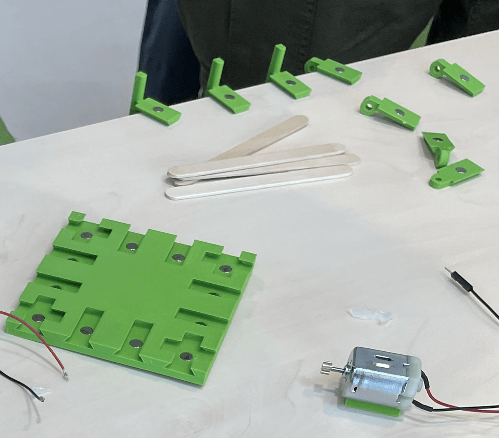After we had our new base plate ready, we wanted to finalize the seed electronics circuit next. This meant soldering the connections and heat-tubing them so that there were not exposed wires. We left some connections unsoldered so that they could be plugged in-and-out easily. This was a good choice since it allowed us to organize the wires much easier. We also hotglued the battery holder and mosfets to the base and the motors and the potentiometers to slidable pieces.

7. User testing session
With the newest version of our seed and a clearer idea of the session flow in mind we conducted a user testing session in which we presented our sessions to each other, observed their work and asked for feedback.
The test participants quickly got to tinkering with the seed, first trying out controlling the vibration motors and then moving on to construct the legs. The one major thing we helped them with while building the bot was how to produce vibrational movement with the DC motors. The key was to attach an off-center weight such as a rubber eraser to the motor heads.
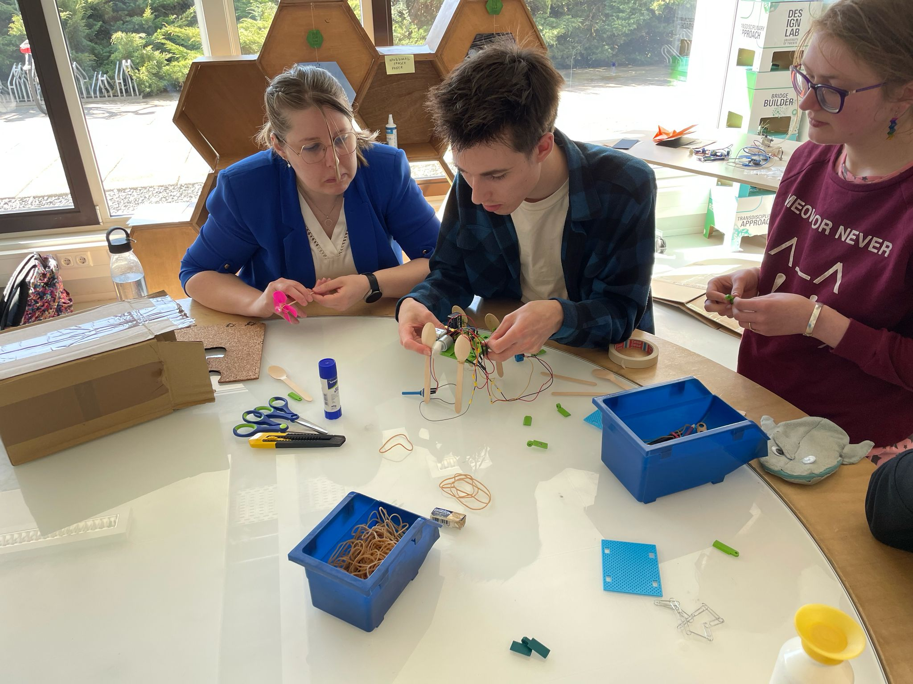Ultimately the group managed to create a robot that moved independently through vibration along a race track they themselves constructed. Controlling the movement direction of the robot proved very difficult but it was tinkerable still since the leg materials were easily modifiable and tinkering with the weight distribution of the robot made a clear difference.
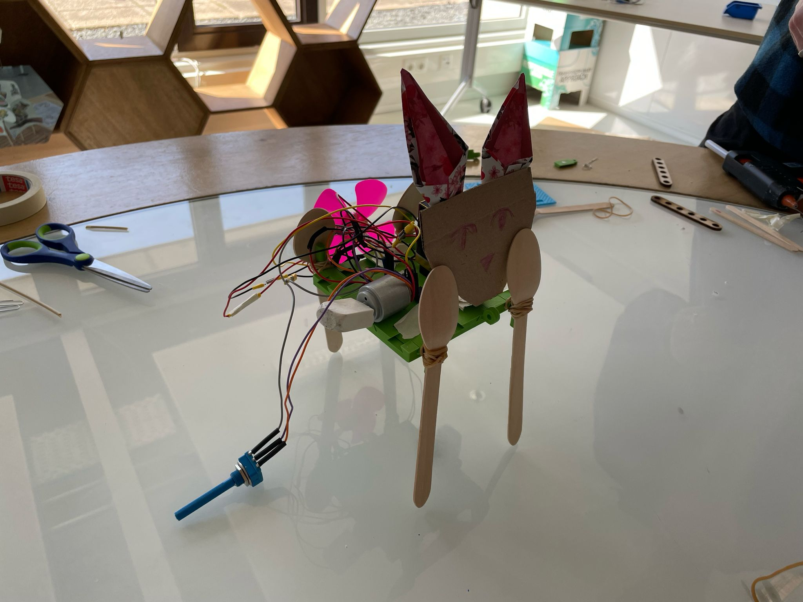The feedback we received was mostly positive and the test participants reported that they did get inspired building the robot and felt that they succeeded in their task. However, they also said that the beginning of the session was a bit chaotic due to unclear objectives, available materials and the overall flow of the session.
It was really important that we conducted this test session also since we realized at that point that we were winging parts of the session a bit too nonchalantly. Afterwards we created the following Tinker Bots Workshop pdf that was intended to act as a guide for the facilitator.
Tinker Bots Workshop Guide8. Final demo session
Finally it was time for the final demo session / market. Before that we still wanted to tidy up the messy wires with electrical tape and organize the scaffolding materials.
We started off with a quick 1-minute pitch of our idea, provided by Gabriel and Daniel.

And then it was time to tinker! We had multiple people come over to our stand and all of the managed to work the motors and add legs. The one thing no one was able to figure out by themselves without our help was how to produce the vibrational movement after powering the motors. However, after we explained the concept of an off-center weight to them, they quickly understood the gist of it and managed to get their robot vibrating properly. Throughout the session we saw many different types of robots being built, which was a success to see since it meant that the participants had actual freedom in their implementation.


The robot of one participant even almost managed to complete a track with a turn successfully, just barely getting stuck in the end!
9. Final reflection
Overall our tinkering session project was a success since it provided participants with interesting hands-on experiences palying around with the materials. The goal of the workshop was defined well-enough and the seed was easy for the participants to operate.
However, this whole project was a very rough prototype of a concept such as this and would need much more refinement and clarification for it to be ready for actual teaching use. The session structure was somewhat chaotic and I feel like there are more ways of tackling vibrational movement that we did not have time to look into for the purposes of this course.